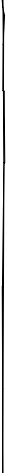

> Canción de mayo “La copa de la vida” Ricky Martin La vida es pura pasión Hay que llenar copa de amor Para vivir hay que luchar Un corazón para ganar *Como Caín y Abel es un partido cruel Tienes que pelear por una estrella Consigue con honor la copa del amor para sobrevivir y luchar por ella luchar por ella (¡sí!) luchar por ella (¡sí!) **¡Tú y yo! Alé, alé, alé ¡Go, go, gol! Alé, alé, alé ¡Arriba va! El mundo está de pie ¡Go, go, gol! Alé, alé, alé La vida es competición Hay que soñar ser campeón La copa es la bendición La ganarás. ¡Go, go, go! Tu instinto natural vencer a tu rival Tienes que pelear por una estrella Consigue con honor la copa del amor para sobrevivir y luchar por ella luchar por ella (¡sí!) luchar por ella (¡sí!) * Repetir ** Repetir Gramática: infinitivo del verbo ( 動詞の不定形 ) スペイン語の「不定形」は、英語の「動詞の原形」「 to 不定詞」を合わせた働きをします。 英語の「動詞の原形」 と同じで、辞書に動詞が項目として挙げられる形でもあります。また、スペイン語の動詞の不定形は必ず -ar, -er, -ir の何れかで終わりますから見分けやすいという特徴があります。歌詞の中の動詞の不定形は次の通り。 llenar (to fill) vivir (to li


